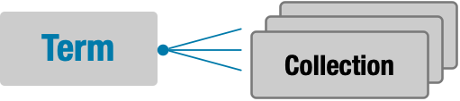
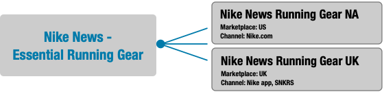
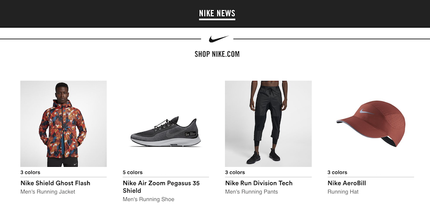
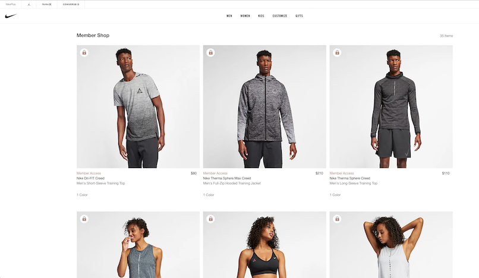
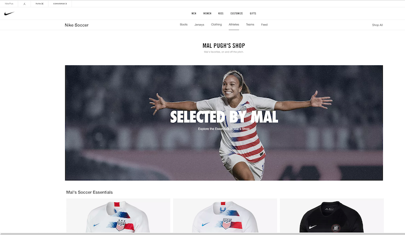
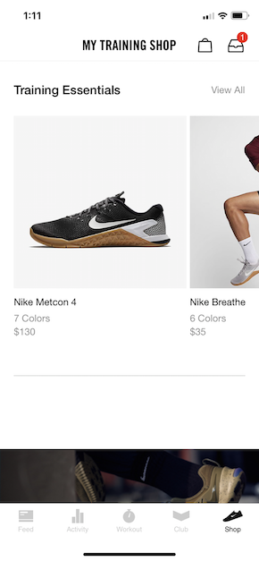

ADDING COLLECTIONS
TO YOUR EXPERIENCE (DRAFT)
Last Updated: 11/10/2018
Add a custom set of products to your experience with Collections.
TIP: Before using this guide, you should have already completed Rollup Threads Developer’s Guide and Product Feeds Developer’s Guide.
What are Collections & Terms?
-
Collection: a set of one or more Product Threads, restricted to a combination of channels and marketplaces.
-
Term: a set of one or more Collections that are related.

Example
The Nike News team wants their NA and UK readers to be able to shop Nike.com products in one of their articles on news.nike.com. They create the following:
- Term: ‘Nike News - Essential Running Gear’
- Collections: ‘Nike News - Essential Running Gear NA’, ‘Nike News - Essential Running Gear UK’

Each Collection contains 4 related running products for a particular marketplace and channel combination, in this case, ‘NA/Nike.com’ and ‘UK/Nike app/SNKRS’.
By calling the Rollup Threads API with the Term, selecting marketplace as US, display the following in their app:

TIP: Each Collection can have different products if desired.
Other Use Cases
Nike.com Member Shop

Nike.com Mal Pugh’s Shop

NTC app Training Essentials

Step 1: Create Terms & Collections
Terms and Collections are created in the Collections admin app. See Create a Collection for a step-by-step guide.
Save the Term UUID, the unique identifier for the Term, e.g. 69c1f58b-c36b-45d6-b3bb-afb160c9ab0c, since you will need it in Step 3.
When you add Product Threads to a Collection, the Threads get automatically updated with that Collection’s Term UUID. Then, you can get the Threads from the Rollup Threads API.
TIP: It typically takes 5 minutes or less for changes to a Collection to become available in the Rollup Threads API.
Step 2: Create Search Rule
This step is OPTIONAL. If you want to further customize a Collection, for example to change the sort order of the response from Rollup Threads, you can take the optional step of creating a Search Rule in the Apollo admin app.
Step 3: Call Rollup Threads
Use the Term UUID obtained in Step 1 to call the Rollup Threads API with query parameter filter=attributeIds(<term UUID>), along with other required or optional filter and sort query parameter values.
The Rollup Threads API response contains the requested product threads, which you can use to display products in your experience.
Filtering by Channel & Marketplace
Channel and marketplace are both required parameters for Rollup Threads. Combine channel and marketplace combinations to apply another level of filtering to the Threads in the Term.
TIPS:
See API Endpoint Quick Reference for endpoint details and links to API Reference documentation.
For more on syntax, see Query Parameters.
Scenarios
Let’s take a look at some scenarios.
| I want to… | Sample Query |
|---|---|
| Do this thing | url to do this thing |
Executing the Request
Sample CURL for {}
CURL goes here
Parsing the Response
The Rollup Threads response is specified in the API Reference, but here’s a few things to know about:
- Rollup Threads returns only active product threads. If you want inactive threads included in the response, call Product Feeds Threads List instead.
{Some hints/callouts about the data in the response and how it could be handled}
API Endpoint Quick Reference
| Endpoint Name | Path | HTTP Method |
|---|---|---|
| Rollup Threads List | /product_feed/rollup_threads/v2{?filter,anchor,count,sort,searchTerms,consumerChannelId,view,ruleStatus} |
GET |
Best Practices
Listed below are some best practices for working with Collections.
Common Questions
Question 1
Answer 1
Contacting the Team
TIP: To find out more, ask a question on #collections.
Need to contact the {} team?
| Slack | |
| Confluence Space | |
| Team Contacts | Person1 (Person1 email) |
Glossary
See the Glossary for related terms.
Document Change Log
| Summary | Date | Description |
|---|---|---|
| Initial draft 11/15/2018 | Initial Draft |
Next Steps
You’ve learned how to add Collections to your experience. Here are some next steps.